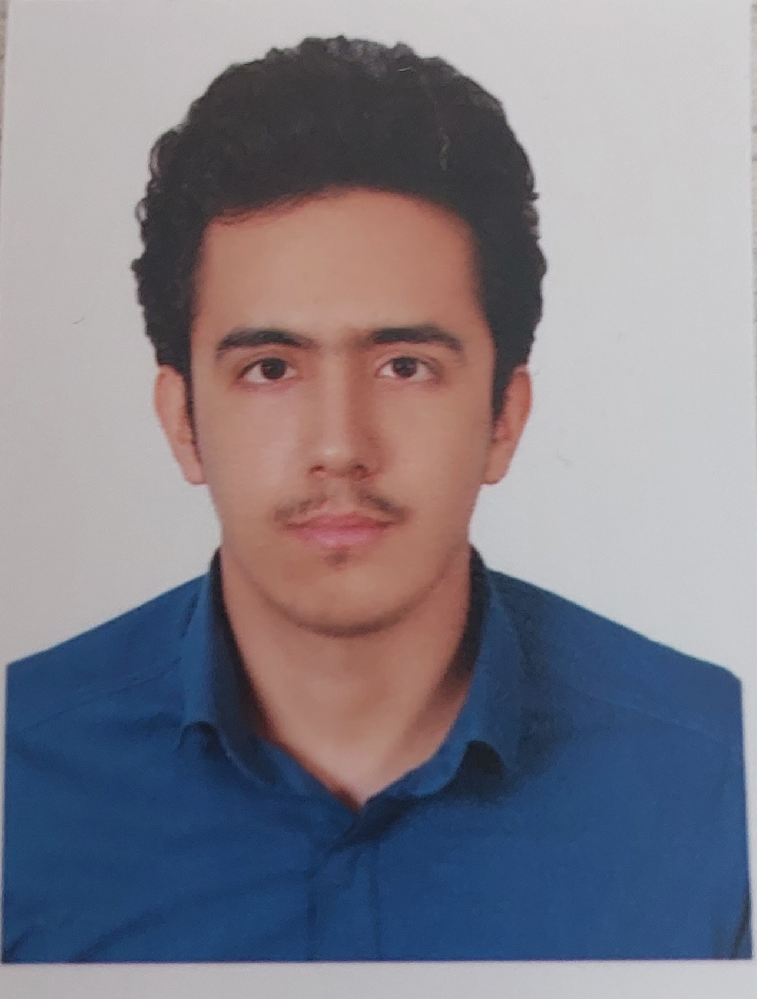

امیر محمد عزتی زیور

📍 ایران | 📞 09331193094 | ✉ amirmooezaty1984@gmail.com
درباره من
دانشجوی کارشناسی ارشد مهندسی عمران گرایش ژئوتکنیک با تجربه عملی در پروژه های محتلف عمرانی و ژئوتکنیکی، دارای
مهارت در تحلیل عددی سازه ها و زمین به روش اجزا محدود، آشنایی با بهسازی خاک و پایدارسازی دیواره های گودبرداری و
توانایی طراحی ساختمان های مقاوم و فونداسیون های نواری و میکروپایل. علاقه مند به کاربرد الگوریتم های یادگیری ماشین در پیش بینی
پارامترهای خاک و بهینه سازی طراحی های مهندسی.
دارای دقت و توجه به جزئیات، توانایی کار تیمی و علاقه مند به تحلیل و یادگیری روش های نوین
تحصیلات
- کارشناسی ارشد مهندسی ژئوتکنیک – در حال تحصیل در دانشگاه تربیت مدرس تهران
- کارشناسی مهندسی عمران از دانشگاه بین المللی امام خمینی قزوین
سوابق کاری
- کار در آزمایشگاه خاک و بتن و انجام تست های مقاومت فشاری بتن و انواع آزمایشات صحرایی و آزمایشگاهی خاک
- انجام آزمایشهای برش مستقیم، تحکیم، دانهبندی، CBR
- مهارت و توانایی کار با نرم افزار تحلیل عددی PLAXIS
مهارتها
PLAXIS
Python
Machine Learning
ETABS
SAFE
تحلیل عددی
Excel
گزارشنویسی فنی
پروژهها
- تحلیل عددی میکروپایل در ترکیب با فونداسیون نواری
- کاربرد یادگیری ماشین در پیشبینی پارامترهای خاک
زبانها
- فارسی (مادری)
- انگلیسی (متوسط)